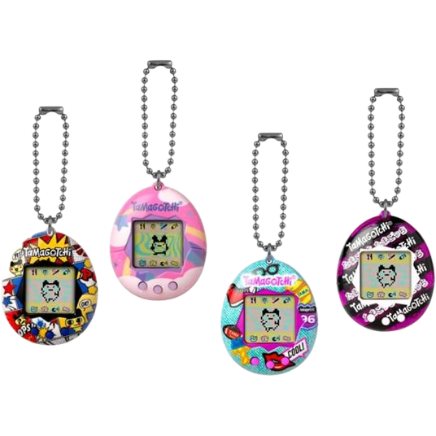

1980-OGGI - ERA DEI FENOMENI GLOBALI
TAMAGOTCHI
Se gli anni '80 avessero un rumore caratteristico, sarebbe quello degli ingranaggi che scattano mentre un'auto sportiva si trasforma in un robot guerriero. I Transformers, nati dalla collaborazione tra la giapponese Takara e l'americana Hasbro nel 1984, hanno cambiato per sempre il mercato dei giocattoli, trasformando ogni pezzo in un puzzle d'azione vivente.
UNA VITA IN PIXEL
L'idea della creatrice Aki Maita era semplice ma geniale: simulare il ciclo vitale di una creatura aliena che necessitava di cure costanti per sopravvivere.
- Il Legame Emotivo:Per la prima volta, un giocattolo poteva "morire" se trascurato. I bambini dovevano nutrirlo, pulirlo, giocarci e persino curarlo quando si ammalava, creando un attaccamento emotivo mai visto prima per un dispositivo elettronico.
- Il Suono di un'Era:L'inconfondibile bip del Tamagotchi che reclamava attenzione è diventato la colonna sonora delle scuole di tutto il mondo, portando molti insegnanti a bandirli dalle aule.


L'ANTENATO DEGLI SMARTPHONE
Il Tamagotchi ha anticipato molte dinamiche che oggi troviamo nelle App e nei social network:
- Interazione h24: Il gioco non si fermava mai; la creatura cresceva in tempo reale, richiedendo un impegno costante durante l'intera giornata.
- Evoluzione:A seconda di come veniva accudito, il Tamagotchi poteva trasformarsi in forme diverse, premiando i proprietari più diligenti con personaggi rari.
- Portabilità: Grazie alla sua natura di portachiavi, è stato il primo vero dispositivo "wearable" di massa, sempre agganciato allo zaino o ai pantaloni.

UN FENOMENO CULTURALE
Oltre 80 milioni di esemplari venduti testimoniano l'impatto di questa "uovo-mania". Il Tamagotchi ha aperto la strada a tutto il genere dei simulatori di vita e ha preparato il mondo all'arrivo di creature digitali ancora più complesse, come i Pokémon o i Digimon.
